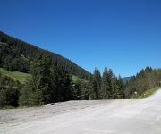

"Qbox" ist eine Lightbox mit der einfache Texte als Parameter mitgegeben oder auch per Ajax oder Iframe nachgeladene Texte sowie Bilder dargestellt werden können. Diese öffnet sich in einer neuen Ebene mittig im Browserfenster, der Hintergrund wird abgedunkelt.
Verschiedene Einstellungen wie die Texte für nas nächste Bild bei Galerie-Ausgaben oder dem Text oder Title beim Schließen-Button können nach dem Einbinden des Scripts "gbox.js" mithilfe einer "init"-Funktion vorgenommen werden.
| Parameter | Datentyp | Beschreibung |
|---|---|---|
| pref | String | Inhalt des Zurück-Buttons bei Galerie-Bilder |
| next | String | Inhalt des Weiter-Buttons bei Galerie-Bilder |
| close | String | Inhalt des Schließen-Buttons der Lightbox |
| close_tip | String | Tip des Schließen-Buttons |
| eventlistener | Bool | True oder False. Ob die Lightbox auf verschiedene Events wie onKeyUp oder onResize reagieren soll. |
<script>
qbox.init({
pref : "<",
next : ">",
close : "X",
close_tip : "Zum schließen die ESC-Taste drücken",
eventlistener : true
});
</script>
Es gibt verschiedene Funktionen die aufgerufen werden können um diese Ebene z.B. zu Schließen oder zwischen den Bildern einer Galerie hin und her zu navigieren.
| Funktion | Beschreibung |
|---|---|
| close | Schließen der Ebene |
| pref | Vorheriges Bild der Galerie zeigen, wenn möglich |
| next | Zum nächsten Bild der Galerie wechseln, wenn möglich |
<script> // Schließen der Qbox qbox.close(); // vorheriges bzw. nächsten Bild einer Galerie zeigen, wenn möglich qbox.pref(); qbox.next(); </script>
Mit folgendem Link können die Javascript- und CSS Source-Dateien mit oder ohne Beispiele als Zip-Datei heruntergeladen werden.
Einfache ausgabe eines HTML-Texten, der als String-Parameter mitgegeben werden kann. Es ist vorteilhaft wenn beim onclick-Parameter des Links die Funktion mit "return" aufgerufen wird, da diese "false" als Rückgabewert liefert und die Seite nicht zum Link navigiert.
<a href="#" onclick="return qbox.open('Hier steht der Text')">
hier klicken
</a>
Wird als erster Parameter der Link selbst und als zweiter das Stichwort 'ajax' mitgegeben, wird das Ziel des Links per Ajax geladen und anschließend ausgegeben.
<a href="data/ajax.html" onclick="return qbox.open(this,'ajax')"> hier klicken </a>
Wird wie bei Ajax als erster Parameter der Link selbst und als zweiter das Stichwort 'iframe' mitgegeben, wird eine Iframe mit der maximalen Content-Höhe als Lightbox ausgegeben und der Link in der Iframe geladen.
<a href="data/iframe.html" onclick="return qbox.open(this,'iframe')"> hier klicken </a>
Bei Bildern muss nur der Link selbst als erster Parameter mitgegeben werden. Verweist der Link auf eine .jpg, .png oder .gif Bild-Datei wird im Content das Bild gezeigt. Zusätlich ist es möglich eine Bildunterschrift hinzuzufügen. Dabei wird der Inhalt des "Title"-Attributes des mitgegebenen Links verwendet.
<a href="imgs/001_lo.jpg" onclick="return qbox.open(this)" title="Landschaft in Österreich"> <img src="imgs/001_th.jpg" alt="Landschaft in Österreich" /> </a> oder <a href="imgs/001_lo.jpg" onclick="return qbox.open(this)" title="Landschaft in Österreich"> hier klicken </a>
 oder hier klicken
Bei Galerien wird wie bei der Ausgabe von Bildern nur der Link selbst als Parameter mitgegeben. Enthält der Link zusätlich das Attribut "rel" werden beim öffen des Bild in der Lightbox alle Links mit diesem Attribut und dem gleichen Wert gesucht und der Benutzer kann mithilfe von Buttons oder den Pfeiltasten "<-" und "->" zwischen den gefundenen Bildern navigieren.
<a href="imgs/001_lo.jpg" onclick="return qbox.open(this)" title="Landschaft in Österreich" rel="gallery"> <img src="imgs/001_th.jpg" alt="Landschaft" /> </a> <a href="imgs/002_lo.jpg" onclick="return qbox.open(this)" title="Steingärten" rel="gallery"> <img src="imgs/002_th.jpg" alt="Butterfly" /> </a> <a href="imgs/003_lo.jpg" onclick="return qbox.open(this)" title="Abstrakte Kunst" rel="gallery"> <img src="imgs/003_th.jpg" alt="Gitarre" /> </a> <a href="imgs/004_lo.jpg" onclick="return qbox.open(this)" title="Gitarre mit Stoff ummantelt" rel="gallery"> <img src="imgs/004_th.jpg" alt="Goldfische" /> </a> <a href="imgs/005_lo.jpg" onclick="return qbox.open(this)" title="Flying V im Tarnfarben-Look" rel="gallery"> <img src="imgs/005_th.jpg" alt="Sandstein" /> </a>
{kind=link}
{kind=link}
{kind=link}
{kind=link}
{kind=link}